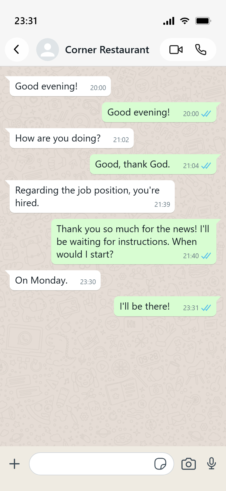
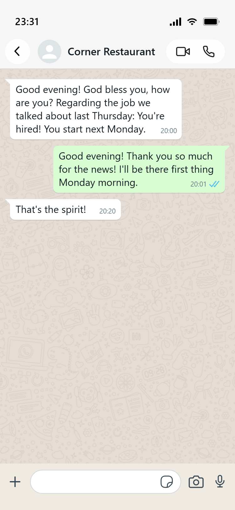
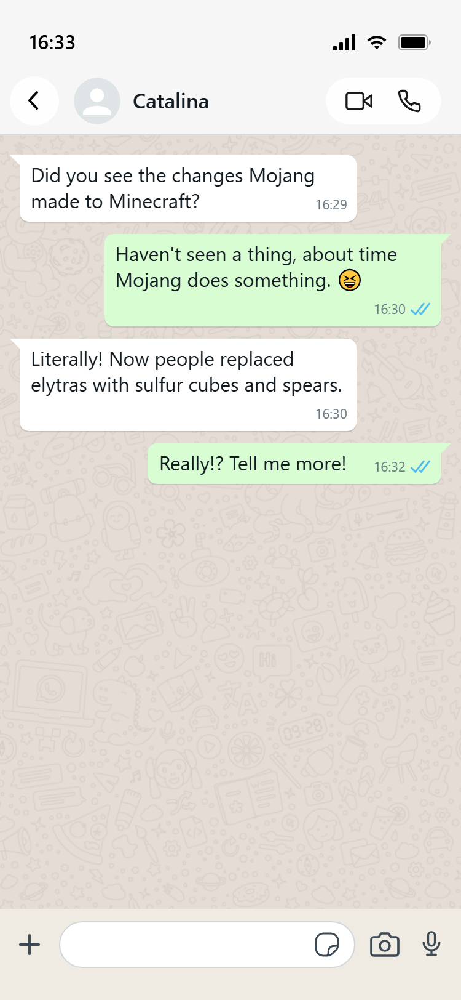
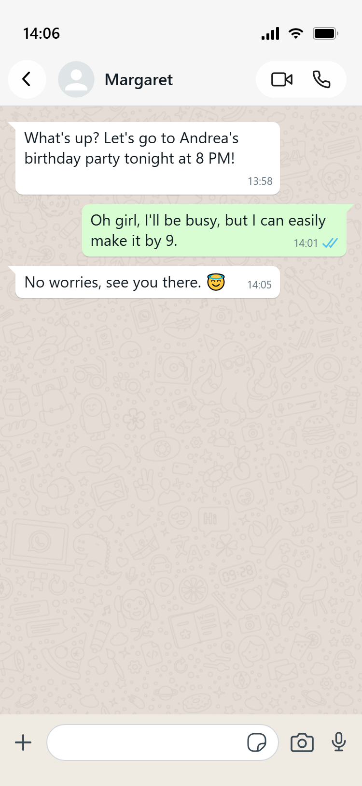
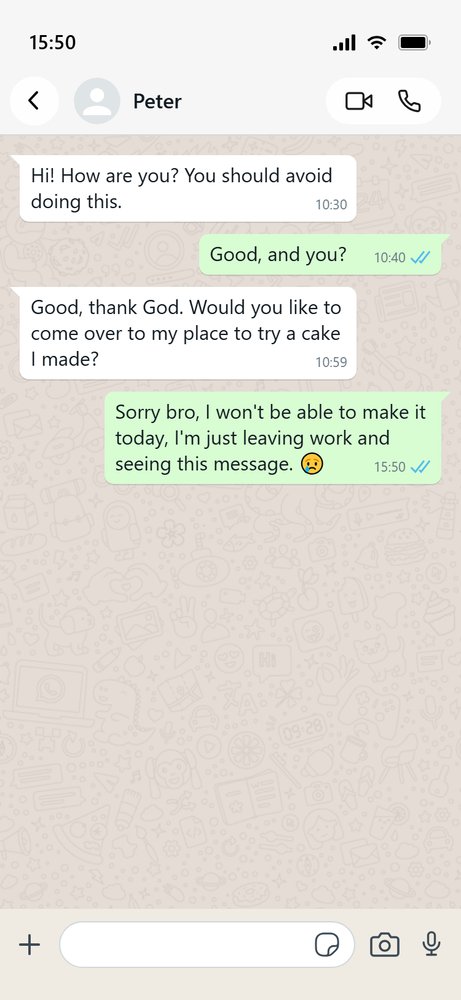
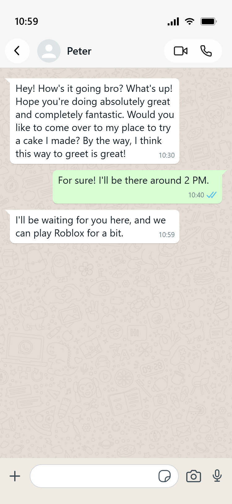
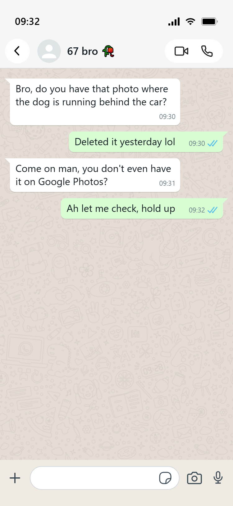
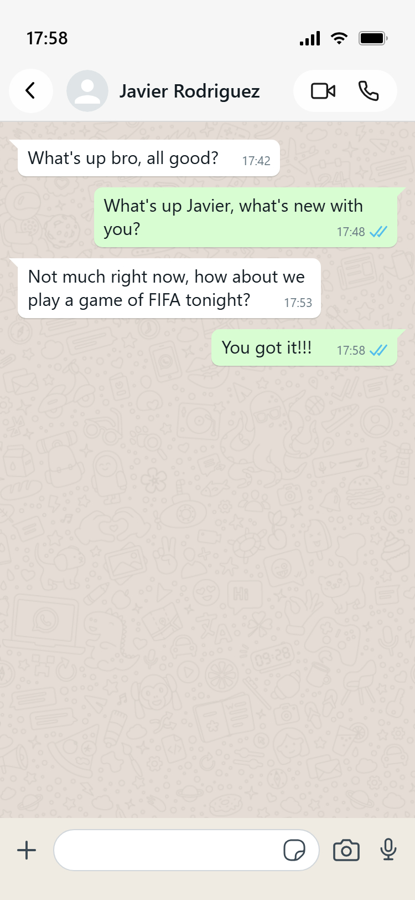

So whan can I do?
Always it's better to be more specific or give more context from a begin, so the conversation flows better. For example:
Initially, it's something completely insignificant and even part of or routine but let's see it through an example:


What changed? Everything! (or almost everything) the person gave more context from a begin making more efficient the conversation avoiding losing the opportunity such in the first conversation.
Always it's better to be more specific or give more context from a begin, so the conversation flows better. For example:


Absolutely no! Greet shows education and politeness. You shouldn't stop greeting, instead change a bit the way you great. For example:


Don't get that far! This goes perfect for a formal conversation such a job interview. On the other hand, speak with freedom with you friend! By the way, conversations are no that artificial, they're more like:

